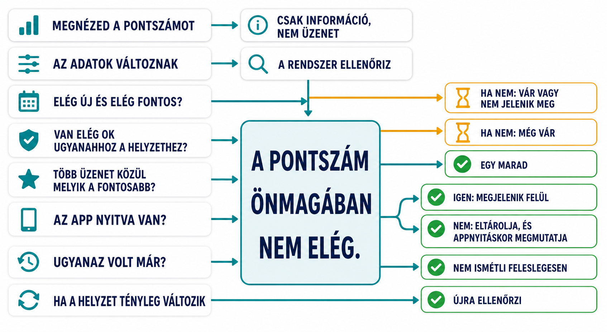

Csak inspect: fókusz, filter vagy user-defined tuning. Nem indít raw signalt és nem jelenít meg Pulse-t.
inspect-onlyno header
Under-the-hood mockup az AI-mentes pulse motorhoz: lokális forecastok, triggerelt signalok, csoportosított storyk, header delivery és minden szinten user-defined finomhangolás.
Ez nem egy triggerlista. A flow azt mutatja, hogy melyik jel mikor csak megfigyelés, mikor kap storyt és score-t, mikor marad várakozó, és mikor jut el ténylegesen a headerig.
A user-interakció és a motor trigger két külön dolog.
Csak inspect: fókusz, filter vagy user-defined tuning. Nem indít raw signalt és nem jelenít meg Pulse-t.
Forecast, limit, due date, data-quality threshold, scheduled calculation, app open/resume vagy date change indít calculation frame-et.
Az engine a jelenlegi állapotot számolja, nem régi szöveget játszik vissza.
source ID · domain/target · zone · direction · severity · confidence · transition · fingerprint.
Csak a materially changed fingerprint tud később új deliveryt indítani; a state itt még nem header-jelölt.
Előbb dől el, hogy egy jel egyáltalán versenyezhet-e.
deferred (HF-008) és engine-only (HF-015–HF-019) nem készít header copyt; ezek policy/diagnostic ágak.
stale · muted · unchanged shown/dismissed fingerprint · insufficient confidence · data delay vagy group threshold még nem teljesült.
Nem minden signal adódik össze: csak azonos domainhez vagy targethez tartozó evidence kapcsolható össze.
1 critical · 1 material high-confidence high · 2 related medium · 3 related low · meaningful recovery · delayed/grouped data-quality.
Hiányzik az evidence vagy a related threshold. A story megfigyelhető, de még nem ready és nem kap score-t.
Egy domináns source vezet; a rokon source-ok bizonyítékot, időzítést vagy caveatot adnak, nem új base weightet.
A score rangsorol; nem jogosít fel egy kizárt vagy forming signal feltámasztására.
clamp(0..100, domináns eligible source base + material-money +15 + due-within-3-days +10 + related evidence +10 - low confidence -20 - recent dismiss -30)
Csak eligible + ready + current fingerprint + delivery opportunity esetén hasonlítható össze. Nincs univerzális megjelenítési küszöb: egy ready Data-quality story 35-tel is nyerhet, ha nincs erősebb ready story.
A motor nem küld ki tíz üzenetet, és a veszteseket nem teszi rejtett queue-ba.
Azonos priority esetén: urgent due state → newer materially changed fingerprint → stable source-ID order.
Nem queue. A következő current recalculationnál újra versenyezhet, ha az állapot még friss.
Egy header story több valós mondatrészből állhat, de minden résznek megnevezett source-a van.
headline claim · evidence phrase · time/cause clause · confidence caveat · recovery clause.
Redundáns, waiting, superseded vagy suppressed source; deferred és engine-only source sem írhat user-facing header copyt.
A döntés és a tényleges header-megjelenés külön állapot lehet.
Az aktuális selected story egyetlen header Pulse-ként jelenik meg.
A background recalculation eltárolja az aktuális selected state-et; delivery csak open/resume után történik.
A Pulse nem végtelen ismétlődés: a state és a fingerprint viszi tovább a döntést.
A trace és a source-card megmarad, de nincs üzenet és nincs score-alapú kényszerítés.
A pending vagy selected story lecserélhető, mielőtt elavult üzenet jutna a headerbe.
A shown/dismissed fingerprint nem ismétel. Valódi változás, feloldás vagy új due-state újra a recalculation lépéshez vezet.
Nem AI, nem RAG, nem notification lista. A motor lokális pénzügyi állapotot számol, abból signalokat képez, majd egyetlen aktuális header storyt választ. A panel nem a usert spammeli, hanem megmutatja, mi történt a háttérben.
Tranzakciók, limitek, recurring ghostok, score line és rolling aggregátumok.
Hó vége, kategória burn, éves limit, ghost income, buffer napok.
Zone, direction, severity, confidence, transition és fingerprint.
Kapcsolódó signalok csoportosítása domain és target szerint.
Egy story megy ki morph pulse-ként; a panel őrzi a teljes trace-t.
Nem dobjuk el őket, és nem játszunk le tíz header üzenetet. A motor előbb elavult állapotot szűr, majd csoportosít, pontoz, és egy komponált storyt küld a headernek. A panelben mind a tíz signal látható marad.
Food monthly burn, yearly travel limit, daily safe spend, weekly pace.
Ghost income missing, income/expense ratio, savings risk, balance buffer.
Uncategorized transactions can reduce category forecast confidence.
Ugyanaz a lokális állapot végigkövethető a raw signaloktól az egyetlen kiválasztott header-storyig.
Az adatváltozás vagy app resume friss calculation frame-et indít.
Csak current, nem muted, nem same-fingerprint és kellően megbízható source versenyezhet.
Csak rokon domain- vagy target-evidence alkothat közös storyt.
Domináns base weight és látható módosítók döntik el, melyik ready story erősebb.
A selected story egyszer jut a headerhez; azonos fingerprint nem ismétel.
A headline, evidence, time/cause és caveat minden része konkrét HF source-hoz kötődik.
Minden budgethez tartozó számítás, küszöb és triggeresemény egy auditfelületen.
Fix terhek, várt bevételek, arányok, célok és balance buffer egy közös pénzáramlási dossziéban.
Ez nem pénzügyi riasztás: azt mutatja, amikor a hiányos input rontja a forecastok megbízhatóságát.

A pontszám önmagában nem elég.